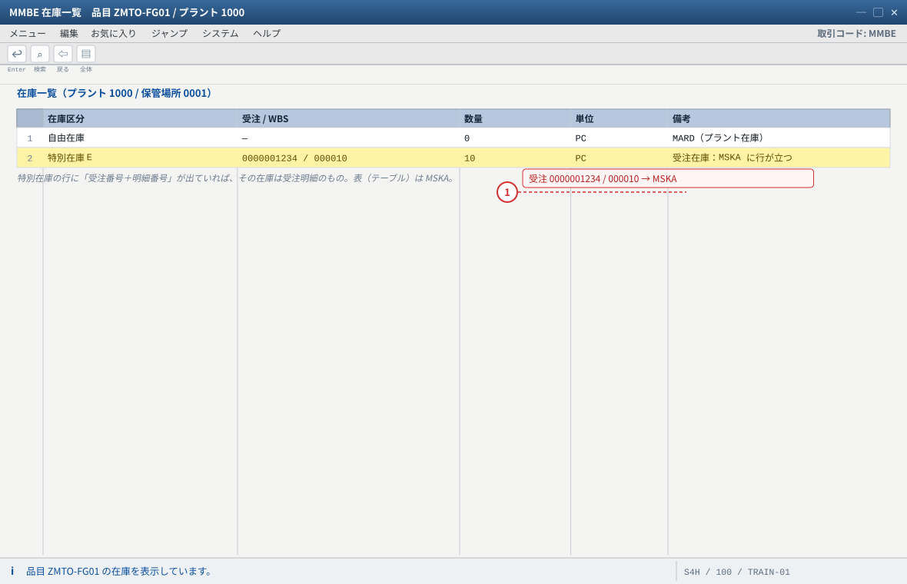
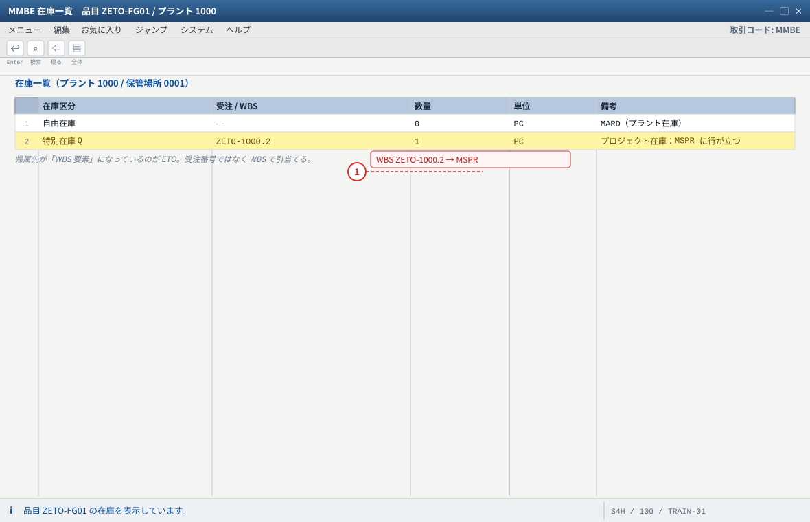
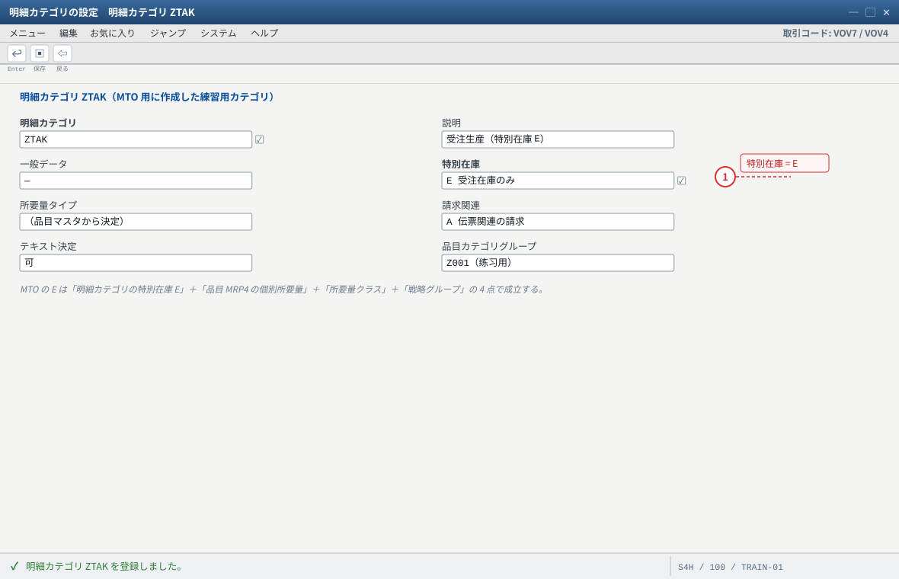
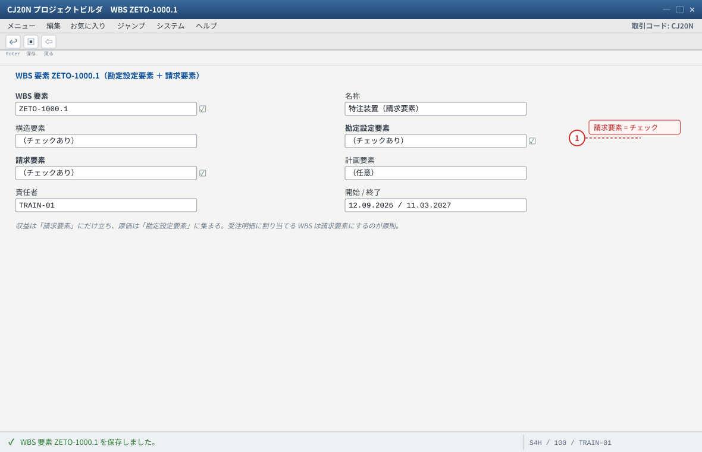
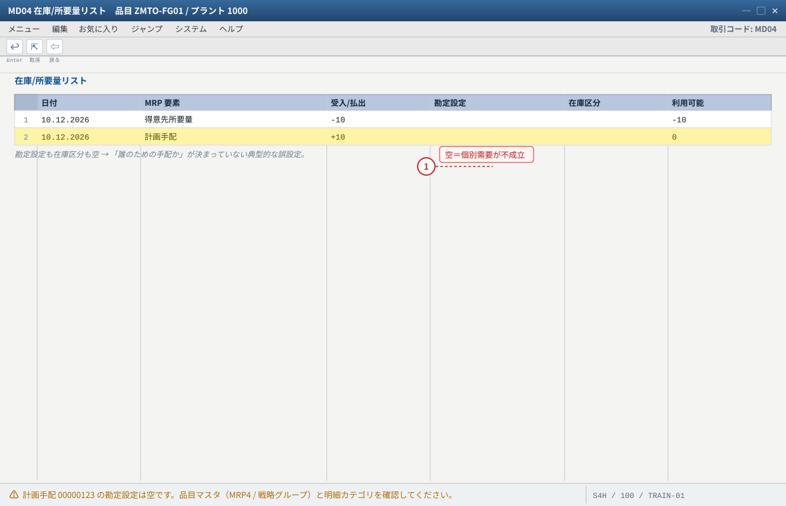

横断比较マトリクス（9 维度）
.png 放进 assets/gui/ 后执行 python3 tools/swap_gui_images.py <site> --apply 即可一键替换。| # 维度 | MTS 見込生産 | MTO 受注生産 | ETO 受注設計生産 | ATO 受注組立 | VC バリアント設定 |
|---|---|---|---|---|---|
| 1 計画起点 | PIR（MD61） | 受注 | 受注 ＋ プロジェクト（WBS） | 受注（保存と同時に指図） | 受注 ＋ 設定値（VC 単体では起点を決めない） |
| 2 库存区分 | 自由在庫 | E 受注在庫 | Q プロジェクト在庫 | E（または自由在庫＋指図） | E または Q（組合せ次第） |
| 3 需求の単位 | 品目＋プラント（予測） | 受注番号＋明細 | WBS 要素（プロジェクト） | 受注番号＋明細 | 受注明細＋設定値（＋WBS もし ETO と組合せ時） |
| 4 調達/製造 | MRP → 計画手配 → 指図 | MRP → 計画手配 → 指図 | プロジェクト/受注 MRP（MD51/MD50）→ 指図・ネットワーク・購買 | 受注保存時に指図を自動生成（戦略 82） | 受注の設定値で BOM/作業手順を選別 → 指図 |
| 5 成本の対象 | 品目/指図 | 製造指図（受注明細へ決済） | WBS 要素（＋指図） | 製造指図 | 指図（＋WBS もし ETO と組合せ時） |
| 6 請求方式 | 出荷ベース（F2） | 出荷ベース（F2） | 請求計画・出来高／出荷ベース／RRB（DP90/DP91） | 出荷ベース | 出荷ベース（設定の価格加算を含む） |
| 7 収益認識 | 出荷時点 | 出荷時点 | 進捗→結果分析（KKA2）→WIP（KKAX）→決済。POC/出来高/イベントベース | 出荷時点 | 出荷時点（VC 固有ではない） |
| 8 主数据の分かれ目 | MRP タイプ・PIR | MRP4 個別所要量＋明細カテゴリの特別在庫 E＋戦略 20 | MRP4 個別所要量＋評価付プロジェクト在庫＋戦略（Cloud E2）＋受注明細の WBS | 戦略 82（所要量クラス 201・指図タイプ PP04）＋BOM | 品目タイプ KMAT＋品目カテゴリグループ 0002＋特徴/クラス/設定プロファイル |
| 9 主要 T-code | MD61・MD01N・CO01・VL01N・VF01 | VA01・MD04・CO08・VL02N・VF01・MD04/MMBE | CJ20N・CJ40/CJ42・CJ30/CJ32・MD51・CJI3・KKA2・CJ88 | VA01（保存＝指図作成）・COOIS | CT04・CL02・CU41/PMEVC・CU50・VA01（構成） |
早见表 1：戦略グループ → 所要量タイプ → 所要量クラス
| 戦略グループ | 名称 | 所要量タイプ | 所要量クラス | 備考 |
|---|---|---|---|---|
10 / 11 / 30 / 40 | 見込生産系 | （独立所要量系） | — | PIR を使う。MTO では使わない |
20 | 受注生産（組立指図なし） | KE | 040 系 | MRP 経由で指図を作る標準的な MTO |
25 | 受注生産（設定可能品目） | KEK | 046 | VC × MTO の組合せで使われる |
82 | 組立処理（受注と同時に指図） | KMFA | 201 | 指図タイプ PP04・受注と指図は 1:1・BOM 必須 |
E2 | 受注設計生産（S/4HANA Cloud の ETO） | E21 | — | 特別在庫 Q。スコープアイテム 6GD の活性後に利用可能（KBA 3623492） |
値は環境で異なります（特に 20/25/82/E2）。確認手顺：品目マスタ MRP3 の戦略グループ → OPPJ/OPPS で中身 → OVZG で所要量クラス（個別在庫・評価区分）を読む。受注側は VA03 の納入日程行で所要量タイプを見る。MD04 に需要が出れば所要量転送は成立。
早见表 2：在庫区分とテーブル（ここを間違えると全部崩れる）
| 区分 | 名称 | 数量テーブル | 帰属先 | 出荷の引当 |
|---|---|---|---|---|
| （空） | 自由在庫（プラント在庫） | MARD / MCHB（バッチ） | プラント / 保管場所 | どの受注でも引当可 |
E | 受注在庫（得意先個別在庫） | MSKA | 受注番号 ＋ 明細 | その受注明細の出荷で引当 |
Q | プロジェクト在庫 | MSPR | WBS 要素 | その WBS を指す出荷で引当 |
K / O / W | 預託（仕入先/外注支給/得意先） | MKOL / MSLB / MSKU | 仕入先・外注先・得意先 | （補足：外注・預託の文脈） |
確認は MMBE／MB52（画面）＋ SE16N（MSKA/MSPR の SOBKZ）。「画面で見た」だけで終わらせず、表でも確認するのが現場で強い人のやり方です。

- 1 受注番号＋明細で帰属が決まる。ここが空なら受注在庫になっていない
自システムでの確認：MMBE の「特別在庫」欄が出ない場合は、表示項目の追加（設定 → 項目）を確認してください。表で直接見るなら SE16N で MSKA。

- 1 WBS で帰属するのが Q。表は MSPR
自システムでの確認：プロジェクト在庫はプロジェクト定義の「評価付プロジェクト在庫」と所要量クラス（評価区分 M）が揃って初めて評価されます。SE16N の MSPR で数量を確認できます。
早见表 3：明細カテゴリグループと業務の結び付き
| グループ | 用途 | 代表的な明細カテゴリ | どこで効く |
|---|---|---|---|
0001 / NORM | 標準的な在庫品（MTS・MTO の完成品） | TAN（標準） | 明細カテゴリ決定（VOV4）の 1 キー |
0002 / LUMF | VC（設定可能品目）および BOM 関連 | —（VC 用の設定が入る） | VC の受注で BOM 展開・設定入力を行うためのキー |
0004 | VC の SET 処理など | — | 同上（バリエーションによる） |
ERLA | 設定可能製品のヘッダ（親） | — | 受注 BOM の親側 |
DIEN / LEIS | サービス品目 | 納入不可／納入関連のサービス明細 | サービス契約・請求のみの明細 |
標準に「受注生産専用」「受注設計生産専用」のキーはありません（MTO は 0001 のままで成立し、明細で特別在庫を持たせたい場合は自建）。値の一覧は IMG「定義: 明細カテゴリグループ」と VOV7 で実測してください。
E（受注在庫）と Q（プロジェクト在庫）の 4 点セット対比
| # | MTO の受注在庫 E | ETO のプロジェクト在庫 Q |
|---|---|---|
| ① | 品目マスタ MRP4「個別/包括所要量」＝ 個別所要量のみ | 品目マスタ MRP4「個別/包括所要量」＝ 個別所要量のみ（同じ） |
| ② | 所要量クラスに個別在庫の設定（戦略 20 → KE → 040 系） | 所要量クラスに個別在庫＋評価区分 M（戦略 E2 → E21 など）＋ プロジェクト定義の「評価付プロジェクト在庫」 |
| ③ | 明細カテゴリの特別在庫 = E（VOV7 の TVAP-SOBKZ） | 受注明細への WBS 要素の割当（WBS 割当を許す明細カテゴリ。Cloud 例 CBAO） |
| ④ | 需要は受注番号＋明細に帰属 → 計画手配の在庫区分 = E | 需要はWBS に帰属 → 計画手配の勘定設定 = WBS・在庫区分 = Q |
| 出荷 | 出荷明細の在庫区分 E → PGI 601 | 出荷明細の在庫区分 Q → PGI 601（Cloud で不可の既知事象：KBA 3623492） |
| 収益・原価 | 受注明細レベル（請求は出荷ベースが基本） | WBS（請求要素＝収益、勘定設定要素＝原価）＋ 結果分析/決済 |

- 1 ここが E ＝ 受注在庫。空だと自由在庫に入る（取違えの最頻出）
自システムでの確認：明細カテゴリの決定は VOV4（販売組織＋流通チャネル＋品目カテゴリグループ＋品目カテゴリグループ）。VA03 の明細で実測できます。

- 1 請求要素でない WBS を明細に割り当てると CJI3 に収益が出ない
自システムでの確認：WBS のフラグは CJ20N（または CJ02）の詳細画面。収益認識は結果分析キー（KKA2）と併せて確認します。
配置を間違えたときの症状（入れ替え・取り違え）
| やりがちな取り違え | 症状 | 直し方（確認の起点） |
|---|---|---|
| ETO なのに E（受注在庫）で組む | プロジェクト単位の原価・収益が出ない（CJI3 に何も出ない）／WBS に成本が集まらない | 受注明細に WBS を割当（E vs Q 对照・../sapeto/） |
| MTO なのに Q（プロジェクト在庫）を狙う | プロジェクトが無いので手配の勘定設定が空になり、入庫が自由在庫へ落ちる | 受注明細の特別在庫 E／MRP4／所要量クラス（../sapmto/） |
VC 品目なのに品目カテゴリグループを 0001 にする | 受注で構成（設定）を入力できず、可変 BOM が展開されない | 品目タイプ KMAT ＋ 品目カテゴリグループ 0002（VC 概観） |
| 戦略 82 を使うのに BOM や指図タイプを用意しない | 受注保存でエラー、または指図が作られない（組立処理は BOM 必須・1:1） | OPPS で 82 の所要量クラス/指図タイプ、CS03 で BOM |
| VC の戦略を 20 のままにする | 設定した値が製造に反映されない／所要量タイプが VC 用にならない | 戦略 25（KEK → 046）を検討 |

- 1 MTO なら「明細カテゴリの特別在庫 E」、ETO なら「評価付プロジェクト在庫と受注明細の WBS」を先に疑う
切り分けの順序：① 受注明細（明細カテゴリ / WBS）→ ② 品目マスタ MRP4 → ③ 戦略グループ・所要量クラス。
どれを選ぶか（判断フロー）
① 標準的な工作機械の受注生産（納期 2 か月・分割請求なし）
② 得意先の工場に据え付ける特注ライン（設計・据付・検収・着手金あり）
③ 自社ブランドの切削工具（見込みで在庫して出荷）
④ 得意先が容量・色・材質を選ぶ産業用ポンプ（受注後すぐ組立）
⑤ 得意先ごとにソフトウェアをカスタマイズして納める案件（受注＋設計）
模範解答は 讲师版 に。